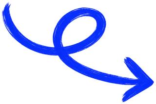
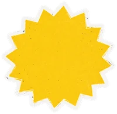
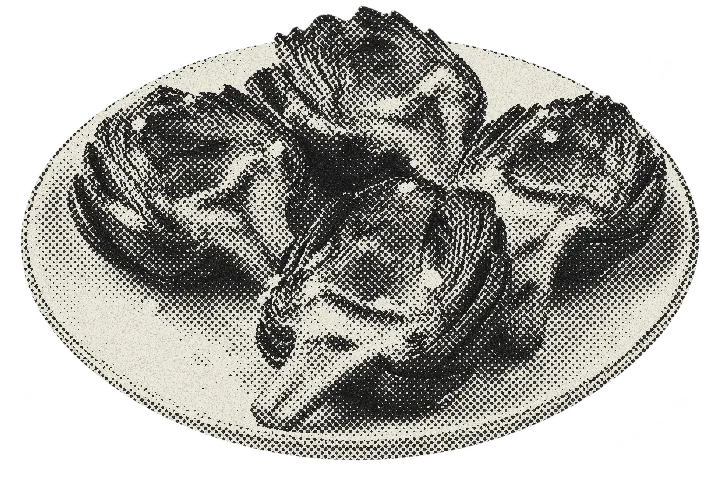
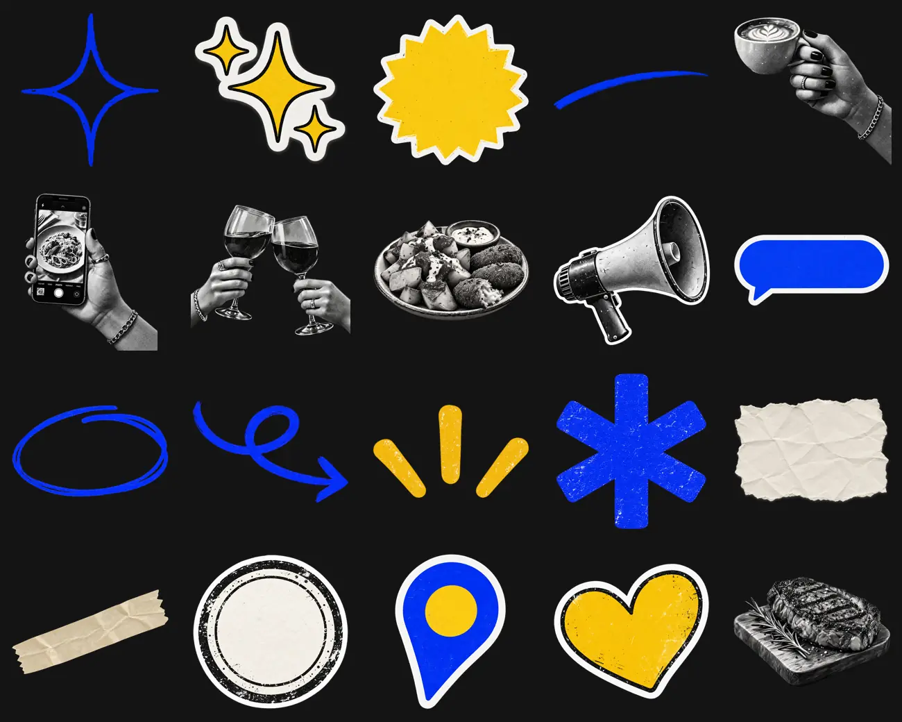

Ttu_local
tu_local Hoy tenemos alcachofas a la brasa. Sabor, temporada y buena compañía.
#Society #Alcachofas #Hoy
Society · prototipo de la app · v1 · 26/09/2026
Tócala como si fuera la app: los botones, los interruptores, el texto y los estilos funcionan, y lo que eliges en una pantalla se ve en las demás. Cada pantalla trae su ficha: qué hace y por qué.

Escribe el nombre de tu bar o tu calle. Buscamos a partir de tres letras.
¿EStuyo?
La Taberna del Patio · Calle Mayor, 12

tu_local Hoy tenemos alcachofas a la brasa. Sabor, temporada y buena compañía.
#Society #Alcachofas #Hoy
¿CUÁNDOsale?
2 PIEZAS ESPERAN TU OK
Y el plan de un reel. Sin tu OK no se publica nada; tienes hasta el miércoles a las 20:00.
Lo próximo
La semana pasada
Del 28 de septiembre al 4 de octubre
Apruebas la semana entera.
Nada programado este día.
Semana del 21 al 27 de septiembre
Frente a la mediana de tus 8 últimas piezas del mismo formato.
Mejor pieza · Post
ALCACHOFAS A LA BRASA
GanadoraLa raya es tu mediana. Gana la pieza que llega a 1,5 ×.
Aprendido
Próxima medición: +72 h, el jueves.
Tu plan
REDES
Incluye Local. Se renueva el 26 de octubre.
Todas las pantallas a la vez, como en el lienzo de Figma. Arriba, las siete de tu Figma, que son el alta completa; abajo, las cinco del día a día que faltaban. Toca una para abrirla en el prototipo.
Tu Figma frente a las SVG del 23 de septiembre (pantallas/_svg), y lo que he tenido que decidir para que el sistema no tenga dos respuestas a la misma pregunta.
Antes solo la bienvenida y Tu plan iban en tinta. Ahora las siete. El oscuro pasa a ser el modo principal; el claro queda definido como secundario.
Fuera el logo «Society» y el bocadillo @society de todas las pantallas. El titular sube y es lo primero que se ve.
Bienvenida → Busca tu local → Conecta tus redes (01-bienvenida 7, 8 y 9), con la paginación de tres puntos. Después, Tu plan y la primera pieza.
El resultado de la búsqueda pasa de cobalto a mostaza con la foto a color, y una flecha de pincel cobalto señala el buscador.
En Conecta tus redes, la pegatina de destellos mostaza sustituye al destello de trazo cobalto.
¿Qué hay hoy? pierde la X y el chip «Reel»: solo 4:5 e Historia.
Así queda estrena el sol mostaza y la publicación ya no es de «society» sino de «Tu local».
En la bienvenida, los rayos junto al cóctel pasan de papel a cobalto.
Sin el asterisco, el logo «society» ni el lema en Space Mono. Space Mono ya no sale en la app.
En Figma, «Inicio» activo es texto cobalto sobre tinta: 2,53:1, por debajo del 3:1 que pide un icono. Pasa a una pastilla cobalto con icono blanco y la etiqueta en papel.
En Figma están escalados a mano: BUSCA a 1,3× de ancho, ELIGE a 1,9×. Aquí Anton va siempre sin deformar, con una escala de cuatro tamaños. ELIGE queda más estrecho que en tu Figma.
Tu plan es un paso del alta: en la referencia original llevaba flecha atrás y ninguna barra. Las pestañas llevarían a secciones vacías, así que la barra aparece al terminar el alta.
Figma mezcla «SIGUIENTE», «Siguiente →», «Editar» y «Publicar», con alturas de 48 a 61. Queda uno: mayúsculas, Schibsted 800 a 17, 52 de alto y a 40 del borde.
En Conecta tus redes, encender una red abre su permiso; no es una preferencia. Empieza apagado y se enciende cuando la red devuelve el acceso.
La ficha de Google hace falta en los tres planes (flujo §4.3) y no salía en ninguna pantalla. Se pide al tocar tu local en Busca tu local.
Cada miniatura de Elige el estilo es el estilo aplicado al plato que acabas de subir (flujo §5.4). En Figma eran fotos sueltas, una de jamón en «Póster cobalt», que pasa a «Póster cobalto».
Así queda respeta el formato: 4:5 se ve a 4:5 y la historia, a 9:16. El nombre de la cuenta es el mismo arriba y en el pie.
La pestaña «Local» llevaba la lupa de «Buscar» de la referencia antigua. Pasa al pin, el mismo de la tarjeta LOCAL.
La guía no tenía. #FF6A4D sobre tinta (6,51:1) y #B8321C sobre papel (5,30:1), siempre con icono y texto.
En el alta, ¿Qué hay hoy? no lleva X porque es un paso obligado. Dentro de la app sí, arriba a la derecha.
La guía prohibía garabatos y tu Figma usa la flecha de pincel. Regla nueva: una flecha como mucho, y solo para señalar lo que hay que tocar.
Cuatro colores de marca y un reparto fijo: el más llamativo ocupa siempre la parte más pequeña. Los contrastes están calculados con la fórmula de WCAG 2.2, no a ojo.
Salen de la paleta para resolver lo que la guía no cubría: textos secundarios, huecos de carga, estados pulsados y error. Cada uno tiene un solo uso.
#F4F1E8#A8A397#5E5A52#CFC9BC#5A5A58#8E8A80#DDB10E#1C33B8#FF6A4D · 6,51:1.#B8321C · 5,30:1 con tarjeta.Las pantallas nunca usan un color de marca a pelo: usan estos nombres. Cambiar de modo es cambiar el valor del token, no la pieza.
| Token | Modo oscuro (principal) | Modo claro | Dónde |
|---|---|---|---|
fondo | Tinta + textura papel oscuro | Papel + textura papel | Fondo de todas las pantallas |
texto | Papel | Tinta | Titulares y texto sobre el fondo |
texto-2 | #A8A397 | #5E5A52 | Pestañas inactivas, detalles de fila |
superficie | Tarjeta, sin borde | Tarjeta con borde #D8D3C6 | Campo, filas de redes, planes, piezas, publicación |
texto-superficie | Tinta | Tinta | Todo lo que va dentro de una superficie |
destacado | Cobalto | Cobalto | Plan recomendado, lo elegido, interruptor encendido, pestaña activa |
texto-destacado | Blanco | Blanco | Texto sobre cobalto (7,28:1) |
accion | Mostaza | Mostaza | Botón principal o tarjeta de tu local. Una por pantalla |
texto-accion | Tinta | Tinta | Texto sobre mostaza (11,30:1) |
contorno | Papel | Cobalto | Botón secundario, chip sin elegir, etiqueta de estilo |
contorno-medio | Papel al 62 % | #8E8A80 | Borde del buscador |
contorno-suave | Papel al 16 % | Tinta al 14 % | Separadores y borde de la barra de pestañas |
esqueleto | #CFC9BC | #D8D3C6 | Filas de carga |
error | #FF6A4D | #B8321C | Avisos de error, siempre con icono Propuesta |
foco | Papel | Cobalto | Anillo de foco del teclado, 2 px a 3 px de distancia |
| Par | Muestra | Contraste | Veredicto | Uso |
|---|---|---|---|---|
| Papel sobre tinta | Aa | 15,04:1 | Todo | Titulares y texto de la app |
| Tinta sobre tarjeta | Aa | 16,31:1 | Todo | Campos, filas, publicación |
| Blanco sobre cobalto | Aa | 7,28:1 | Todo | Chips y etiquetas elegidas |
| Papel sobre cobalto | Aa | 5,94:1 | Todo | Tarjeta REDES, tarjetas destacadas |
| Cobalto sobre tarjeta | Aa | 6,45:1 | Todo | Hashtags, «Conectada», acciones de pieza |
| Tinta sobre mostaza | Aa | 11,30:1 | Todo | Texto del botón principal y de tu local |
| Papel suave sobre tinta | Aa | 7,33:1 | Todo | Texto secundario |
| Mostaza sobre cobalto | Aa | 4,47:1 | Solo grande | Pegatinas y titulares de más de 24 px |
| Punto apagado sobre tinta | ● | 2,67:1 | Adorno | Puntos inactivos: el activo, mostaza, lleva la información |
| Cobalto sobre tinta | Aa | 2,53:1 | Nunca texto | Solo superficie (pastilla, tarjeta) o adorno (destello, rayos) |
| Mostaza sobre papel | Aa | 1,33:1 | Nunca | Ni texto ni trazo fino sobre papel |
Un botón mostaza, texto tintaLa acción de la pantalla, abajo y a todo el ancho.
Dos mostazas juntasSi hay dos acciones, la segunda va con contorno.
Cobalto como texto en tinta2,53:1. Sobre tinta, el cobalto es fondo y encima va papel o blanco.
Cobalto como superficiePastilla cobalto con texto blanco: 7,28:1.
Mostaza a sangreComo fondo grande recuerda a otras marcas y apaga la acción.
Destello cobalto como adornoNo es texto ni control: el contraste no aplica.
Tres familias en la app y una cuarta solo para piezas de marca. Todas son de Google Fonts con licencia SIL Open Font License: sirven en la app, en la web y en papel.
Titulares
ANTON
Grotesca condensada y pesada. Titulares de pantalla, nombres de plan, cifras y titulares de las piezas. Siempre en mayúsculas en la app.
Acento
cursiva
El tramo humano de cada titular. En minúscula, salvo «PLAN», que va en versalita a peso 620.
Interfaz
Schibsted
Todo lo que se lee de corrido o se toca: botones, campos, filas, textos y pestañas.
Solo marca
TU BAR.
TU COMUNIDAD.
Rótulos pequeños de piezas de marca. Salió de la app al quitar el lema de Tu plan.
Medidas en puntos sobre una pantalla de 390 de ancho. El margen lateral es de 20, así que el ancho útil es de 350.
Anton tal cualAquí, a 112 en la pantalla.
Estirada 1,9×Como en tu Figma. Ver D1.
Textura, fotografía, pegatinas e iconos. Regla de reparto: un adorno por pantalla fuera de la pieza que se publica, y la mostaza como adorno solo si no compite con el botón.
img/papel-oscuro.webp, 780 × 1688, a sangre.
El banco completo, con 23 recursos, está en society-identidad-editorial/recursos-graficos/.

Línea de 2 a 2,4 en una rejilla de 24, extremos y esquinas redondeados, en el color del texto. En la app se dibujan entre 22 y 26. Los logos de redes son aproximados: en el diseño final se usan los oficiales con sus normas.
Cada componente con todos sus estados, sobre el fondo real de la app. Son las mismas piezas que montan las pantallas: lo que cambia aquí cambia allí. Se pueden tocar.
Uno principal por pantalla, en mostaza. Si hay una segunda acción, va con contorno y a la izquierda.
Elección única entre formatos. Funciona como un grupo de radio: siempre hay uno elegido.
Conecta una red. Encenderlo abre el permiso de esa red; el interruptor no se da por encendido hasta que la red responde que sí.
role="switch", aria-checked y el nombre de la red en la etiquetaLo que el dueño cuenta con sus palabras. Hasta 300 caracteres, con contador a la vista.
Busca el local por nombre o por calle. Empieza a buscar a partir de tres letras.
El resultado más probable de la búsqueda. Es la acción de la pantalla, por eso va en mostaza y la pantalla no tiene botón.
Un plan por tarjeta: icono, nombre, una frase y una foto de ambiente. La recomendada va en cobalto con su pegatina.
Una red social: logo, nombre, qué aporta y su interruptor. Cuando está conectada, la frase se cambia por la cuenta.
Una muestra del estilo aplicada al plato real del cliente, con su etiqueta debajo. Elección única.
La foto real del plato. Es obligatoria: sin foto real no hay pieza.
La pieza como la verá la gente en Instagram, al tamaño exacto de su formato. Los iconos de me gusta, comentar, enviar y guardar son solo dibujo.
tu_local Hoy tenemos alcachofas a la brasa. Sabor, temporada y buena compañía.
#Society #Alcachofas #Hoy
Dónde está cada publicación. Cada estado tiene forma y texto propios, no solo color. El detalle de cada uno está en Cómo se usa.
Cinco secciones fijas abajo. Aparece al terminar el alta.
La hoja sube desde abajo para decidir algo sin salir de la pantalla; el velo oscurece el resto y cerrarla es tocar fuera. El aviso baja arriba para confirmar lo que ha pasado y se va solo a los 3 segundos.
REDES
Todo lo de Local, y además:
Los recorridos completos, con lo que ya tiene pantalla y lo que falta por diseñar. El orden de los pasos es el orden real.
Tu Figma cubre del paso 1 al 10. Lo que va después sale del flujo de la aplicación (§4.1) y no bloquea: se completa desde Inicio.
Qué gana el bar, en una frase.
Correo y contraseña o enlace por correo. Va antes de conectar nada: los permisos se guardan por restaurante. Por diseñar.
Nombre, dirección y horarios sin teclearlos.
Hoja «¿ES tuyo?». Sin API aprobada, gestión asistida.
Permiso de Instagram y, si se decide, de las demás.
Local, Redes o Reels, con su hoja.
Stripe Checkout, fuera de la app. Solo el aviso firmado activa el plan.
Primera pieza: una frase y la foto real.
Queda como estilo de la marca, con fecha.
Se publica o se programa. Entra en la app.
Datos, horarios y cierres, carta con precios y alérgenos, material real y catálogo. Por diseñar.
Ficha, web, coherencia de datos y línea base de las 12 últimas piezas.
Novedades del trimestre y objetivo; Society propone calendario y reparto.
Solo en Reels: voces diciendo una frase del negocio con platos y precios.
Día y hora del ciclo, modo de aprobación y canal de avisos.
Frase de hasta 300 caracteres, foto real y formato.
Cuatro muestras con tu plato. Por defecto, el de la marca.
La pieza a tamaño real. EDITAR o PUBLICAR.
Ahora o programada. Es la aprobación del dueño (G2).
Aviso y la pieza pasa a Semana.
A +24 h, +72 h, +7 d y +28 d. Sale en Resultados.
Propuesta del flujo de la aplicación (§6.1). El día y la hora los elige cada restaurante. En cobalto, lo que hace el dueño.
Arranca el ciclo con las cuotas, el calendario y las métricas de la semana anterior. Plan de la semana y briefs.
Producción de cada plano por su ruta y verificación con bloqueos directos.
Tu OK: la semana entera o pieza a pieza. Aviso a las 24 h.
Publicación programada, automática o asistida.
Publicación. Primeras mediciones a +24 h; las historias, antes de que caduquen.
Publicación. Mediciones a +72 h.
Publicación. El lunes siguiente llega el informe y lo aprendido alimenta el plan nuevo.
| En la app | Estado interno (informe 05 §4) | Qué puede hacer el dueño | Cómo se ve |
|---|---|---|---|
| Preparando | Producción: reservado, enviando, aceptado, resultado, revisión | Nada; ver el avance | Preparando |
| Revisa el plan | Puerta G1: fotogramas clave y plan antes de animar (reels) | Aprobar o pedir cambios | Revisa el plan |
| Necesita tu OK | Puerta G2: render, texto, canal y fecha | Aprobar, editar o descartar | Necesita tu OK |
| Programada | aprobada | Cambiar la fecha o anular | Programada |
| Publicada | publicada y medición pendiente o completa | Ver sus resultados | Publicada |
| Parada | bloqueada_por_proveedor, bloqueada_por_presupuesto, rechazada_por_fidelidad | Leer el motivo; subir material si se pide | Parada |
| Archivada | archivada o cancelada; sin OK en 72 h | Reprogramar | Archivada |
Los planes se suman (README §5, decisión del 15/09/2026). Nombres del Figma; precios y cuotas sin decidir.
| Función | Local | Redes | Reels | Dónde |
|---|---|---|---|---|
| Datos del negocio, horarios y carta | Local | |||
| Ficha de Google: fotos, publicaciones y métricas | Local | |||
| Borradores de respuesta a reseñas | Local · en el plan Local, según el flujo §6.3; el README lo deja abierto | |||
| Diagnóstico al empezar | Inicio | |||
| Material real | Fotos | Fotos y clips | Fotos y clips | Local |
| Posts, carruseles e historias en Instagram | — | Crear, Semana | ||
| Otros sitios (TripAdvisor y similares) | — | Local · qué sitios, por decidir | ||
| Estilo de marca con muestras de tu plato | — | Elige el estilo | ||
| Vídeo generado | — | Muy poco, para historias | Sí, es lo principal | Semana |
| Reels al mes | — | — | Semana · cuántos, por decidir | |
| Prueba de voz | — | Opcional | Perfil | |
| Ciclo semanal con tu aprobación | Semana | |||
| Resultados | Acciones de la ficha | Redes y ficha | Redes y ficha | Resultados |
| Precio y cuotas | Pendiente README §5 | Tu plan | ||
| Pestaña | Pregunta del dueño | Funciones |
|---|---|---|
| Inicio | ¿Qué tengo que hacer hoy? | Lo que espera tu OK, crear (tres entradas), lo próximo, el mejor resultado, completar el alta |
| Local | ¿Está bien lo de mi local? | Ficha de Google, reseñas y respuestas, carta y alérgenos, horarios y cierres, material real, otros sitios |
| Semana | ¿Qué se publica y cuándo? | Calendario, aprobar pieza a pieza o la semana, revisar el plan de los reels, reprogramar |
| Resultados | ¿Está sirviendo? | Cifras frente a tu mediana, mejor pieza, aprendizajes, informe semanal |
| Perfil | ¿Cómo está montado? | Plan y pagos, redes conectadas, estilo y voz de marca, ciclo, modo de aprobación, avisos, personas |
Lo que esta página no decide por ti. Mientras no se cierre, la página enseña lo indicado en cada punto.
En tu Figma, ELIGE está a 1,9 × de ancho. Aquí va en Anton sin deformar, a 112. Si quieres un titular ancho, lo limpio es una segunda familia con versión ancha, no estirar Anton.
La guía de identidad prohíbe garabatos y flechas. Tu Figma la usa en Busca tu local. Propuesta: permitir una por pantalla, solo para señalar lo que hay que tocar.
Conecta tus redes va antes de Tu plan, y el plan Local no usa redes. O Tu plan pasa delante, o Conecta tus redes lleva «Ahora no» para quien elija Local.
El README lo deja por definir (§4.1) y hasta enero solo hay integración prevista con Instagram. Si se confirma, TikTok, Facebook y X salen como «Próximamente».
Aquí se dibuja como titular sobre papel con dos versiones del plato. Falta saber si es eso, un carrusel o una lámina pensada para la cuadrícula del perfil.
Tu Figma lo pone en los hashtags de una publicación del local. Es publicidad de Society en la cuenta del cliente y ocupa uno de los cinco hashtags permitidos.
Local, Redes y Reels en tu Figma; «Presencia en Google», «Presencia + redes» y «Completo con reels», provisionales, en el README (§5).
Precio mensual, alta aparte o no, y cuántas publicaciones, historias y reels entran en cada plan (README §5 y §14.2).
Una búsqueda de lugares de Google o la propia ficha de Business Profile. No está verificado qué permite cada una ni su coste.
Día y hora en que arranca la semana si el dueño no elige (flujo §12). Perfil enseña «Lunes a las 10:00» como ejemplo.
#FF6A4D sobre tinta y #B8321C sobre papel, siempre con icono y texto. Hace falta para campos, permisos caducados y piezas paradas.
Queda definido y se puede probar en Pantallas. Falta decidir si la app lo ofrece o es solo oscura.
Las otras dos entradas de creación del README (§6) no tienen pantalla todavía.